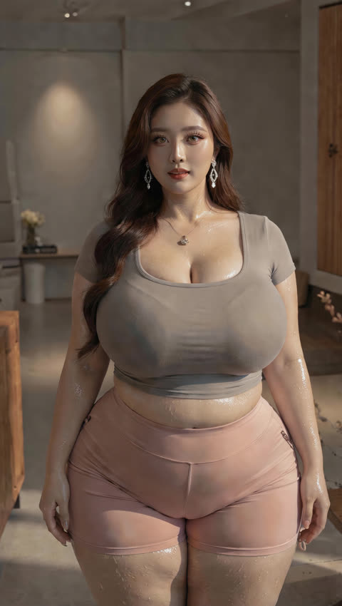

Tambah sudut
Pilih sisi tubuh, lalu ambil foto. Putar badan ke kanan: depan, sisi kiri, punggung, sisi kanan.
- HP tegak, jarak kamera sama di setiap sisi.
- Kepala sampai kaki masuk bingkai.
- Beberapa foto sekaligus diurutkan mengikuti putaran.
- Video sambil berputar dipotong menjadi 24 sudut.
Cek bingkai
Seluruh tubuh sebaiknya terlihat, dari kepala sampai kaki.

kepala
kaki
Sesi tinjauan
Setiap sesi menyimpan rangkaian sudutnya sendiri, di HP ini.
Cara meninjau 360°

Foto referensi di repo. Putaran contoh diambil dari videonya: depan, sisi kiri, belakang, sisi kanan, lalu kembali ke depan.
- Geser foto ke samping, atau tekan tombol di tengah lingkaran. Satu putaran contoh berlangsung sekitar 10 detik, sama seperti videonya.
- Untuk tubuhmu, ambil beberapa sisi sambil berdiri di titik yang sama. Badan yang berputar, kamera jangan bergeser.
- Isi delapan sisi supaya tinjauan utuh. Derajat di kiri atas mengikuti sisi yang sedang tampil.
- Foto dan video tidak dikirim ke server. Semuanya tersimpan di HP ini. Kalau data situs dihapus, fotonya ikut hilang.
Menyusun putaran
Membaca video…